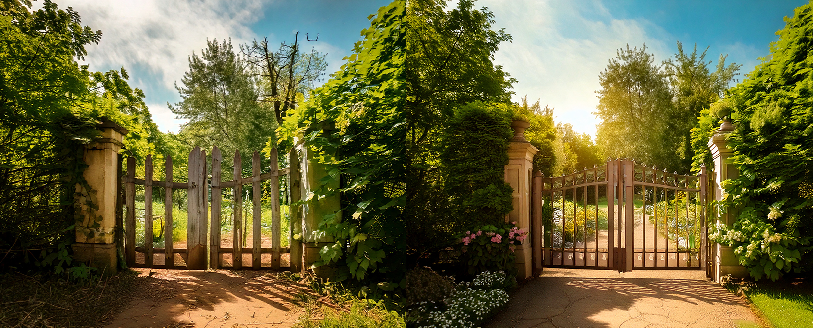
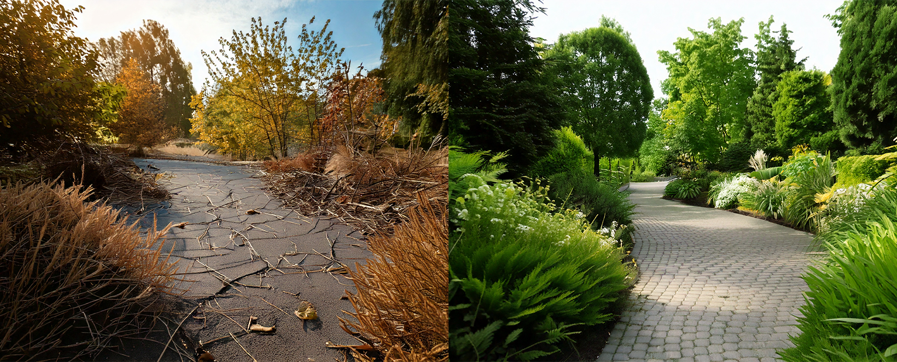

Accueil
Services
Aménagement paysager
Entretien de jardin
Création de terrasses et allées
Pose de clôtures et portails
Élagage et abattage d’arbres
Arrosage automatique et éclairage extérieur
Plantation et gazon
Toits et murs végétalisés
Bassins et fontaines
Jardins écologiques et permaculture
Réalisations
FAQ
Contact
Nos réalisations
 
Pour toute demande d'informations, contactez-nous via
infos@lucasjardins.fr
.